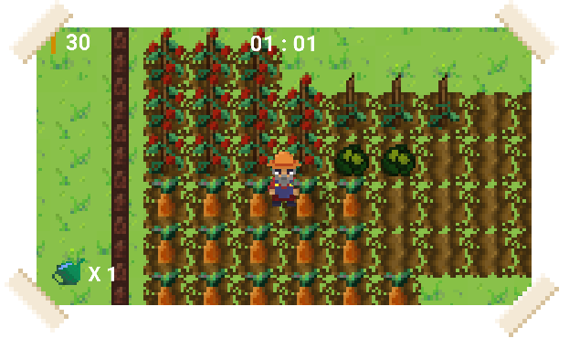

Devlog 0 - Introduction
First of all I just want to appologise for any spelling errors, Sublime Text doesn't have any auto correct lol.
Hey everyone, my name is Kasper and I'm developing a game called Farmer Joe. Farmer Joe is a fast paced game that has similar vibes Overcooked.
The game was originally created in the Ludum Dare 52 Game Jam over 3 days with me and my friend Harry. Afterwards, I decided to continue developing the game and added many new features to the game.
You can play the Game Jam version by clicking the image below.
